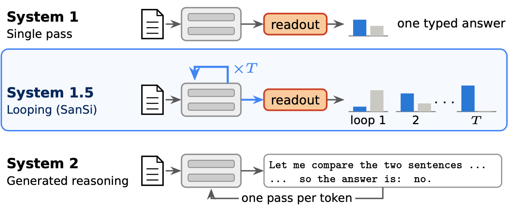
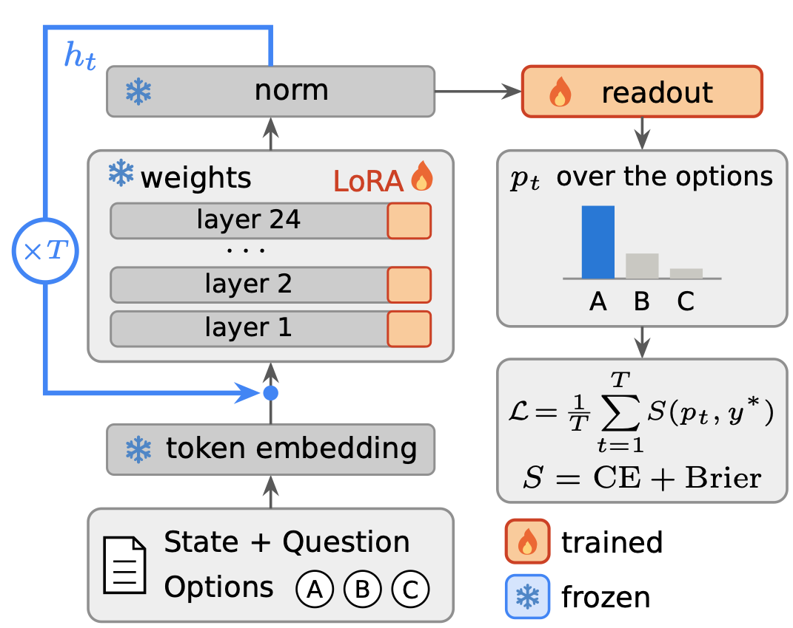
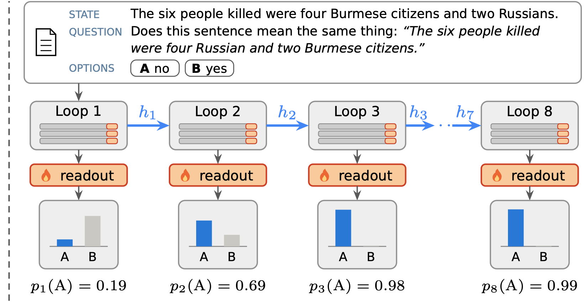

Between one pass and generated reasoning
A typed decision model answers a declared question without generating text: a decision head returns a probability for each of the declared options in a single forward pass. A single pass is fast, intuitive System 1 thinking: every decision receives the same amount of computation, however hard it is.
SanSi studies what lies between one pass and generated reasoning: looping, in which the same layers are applied several times before one typed readout. Each loop lets the model revise its hidden state before it commits to an answer, without generating a token; we call this System 1.5 thinking. The option probabilities are read after every loop, so one model serves every budget from one loop to eight in a single run.

SanSi is the pinyin of 三思, “think thrice”, from the Analects: “Ji Wenzi thought thrice before acting.” Confucius is said to have replied that twice would do. In our data the second loop brings 62% of the gain, and the third brings it to 88%.
Follow a decision through the loops
These are real test items with the probabilities that SanSi gives to every option after each of its eight loops. Move the slider, or press play. Below the options are the answers of three single-pass models that were trained on the same data.
What looping buys, and what it costs
We compare SanSi with single-pass models that are fine-tuned on the same items with the same recipe. The controlled comparison is with SmolLM2-1.7B, which has the same shape (24 layers, hidden size 2,048) and makes one pass where SanSi makes eight. The Qwen3.5 models are newer and larger references, and Kev-4B (our data) is the larger of them trained on our data with Kev's own code. The gain of looping is paid in computation, not in parameters.
Accuracy against parameters
10,027 test decisions. Single-pass models gain accuracy with parameters; SanSi gains it by looping the same parameters. The Jev API was not trained on our data.
Accuracy against computation
GPU time of one pass over the test set; one loop of the 1.4B backbone is 1.
The main comparison
10,027 test items; mean ± standard deviation over three training seeds. All models are fine-tuned on the same data. Columns All to Far: accuracy (%) on all test items and by distance from the training data. Cost: GPU time of one pass over the test set, relative to one loop of the 1.4B backbone, on one RTX A6000.
Where the gain is largest
The gain is not the same for every kind of decision. It is smallest on classification, where one pass is already enough, and large where a decision has to bring several pieces of information together.
Accuracy by item type
Ordered by the gain of SanSi at loop 8 over SmolLM2-1.7B (points, on the right).
Kev on our data, and released models
Accuracy on the test items that neither side trained on
Far transfer and JevBench. Bars through the marks: one standard deviation over three seeds; the released models are single runs.
Loop by loop
Because every loop is read, the same test run shows what each loop adds. Most of the accuracy comes from the second and the third loop. The probabilities move differently: confidence keeps rising after the answers have settled, so calibration is best around the third loop, while the model gets steadily better at noticing that the evidence for a decision is missing.
Answers fixed and broken
The gain in accuracy is the net result of two opposite effects: a loop fixes some answers and breaks others. An answer that settles late is also less often right.
Changed since loop 1
Share of the 9,645 answerable items whose answer at loop T is right where loop 1 was wrong (fixed), or wrong where loop 1 was right (broken).
When answers settle, and how often they are right
Bars: share of answers that settle at each loop. Line: share of those answers that are right at loop 8.
More loops than trained
A looped decision model can be read after fewer loops than it was trained with, but not after more: beyond the trained loops the accuracy declines.
Running a model beyond the loops it was trained with
Accuracy on the 10,027 test items. Hollow markers: loops that were not trained.
Reasoning depth
Two program-generated tasks isolate reasoning depth: every item needs exactly k dependent steps. In a liar chain, each person says that another person tells the truth or lies; in object swaps, five people swap objects in pairs. The models are trained on depths 1 to 8 and tested up to depth 16. Each loop lets SanSi follow a longer chain, beyond the depths seen in training, and a single-pass model with three times the parameters stays between its first and its second loop.
Accuracy by depth
Every loop and every depth
Accuracy of SanSi above chance. The outlined row is the loop selected on the left (click a row to select it). The white lines mark the end of the trained depths and of the trained loops, both at 8.
SanSi as a verifier
Typed decision models are increasingly used to judge the outputs of other models. Here SanSi provides the only reward for training a generator with reinforcement learning on multi-hop questions, without gold answers. The only thing that varies is the loop at which SanSi is read. With one loop the generator is damaged; with four or eight it improves.
F1 of the generator after training, by the loop at which SanSi is read
3,000 test questions of 2WikiMultiHopQA. Large dots: mean of three training runs; small dots: the runs.
How it works
SanSi is built on a language model that was pre-trained to loop (Ouro-1.4B). The backbone stays frozen. We train LoRA adapters and one small readout per loop, 61M parameters in total, and train every loop towards the target distribution with two proper scoring rules (cross-entropy and the Brier score).


Citation
@article{gan2026sansi,
title = {SanSi: A Looped Typed Decision Model for System 1.5 Thinking},
author = {Gan, Shuyu and Lee, Young-Jun and Kang, Dongyeop},
journal = {arXiv preprint arXiv:2610.07730},
year = {2026}
}